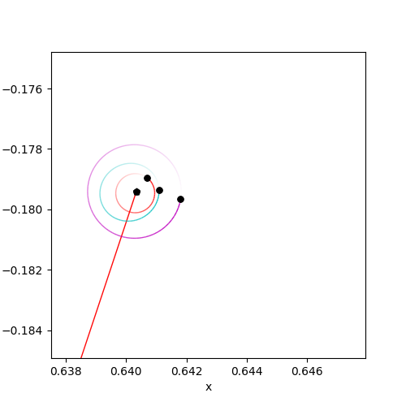
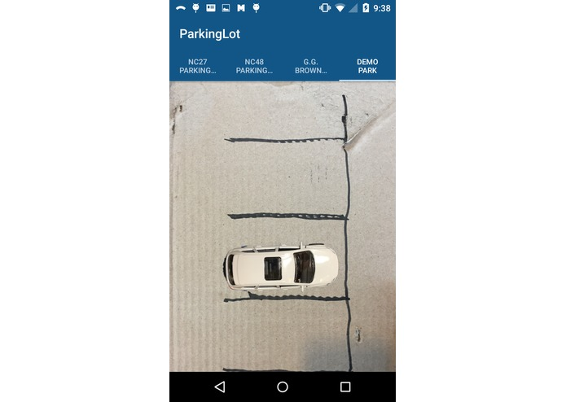

01
Custom automation systems
Connect existing applications, APIs, databases, and human processes into a single dependable flow.
- Workflow discovery and design
- API and database integrations
- Scheduled jobs and event-driven actions
Early-stage automation studio
I build practical automation solutions that connect the tools your team already uses with AI and cloud infrastructure.
Custom workflows · Reusable automation packages · AWS-native foundations
What I am building
Start with one painful manual process. Turn it into a dependable workflow that can be monitored, improved, and reused.
01
Connect existing applications, APIs, databases, and human processes into a single dependable flow.
Use AI where it helps: extracting information, classifying work, summarizing documents, and routing decisions.
Turn common needs into repeatable building blocks instead of starting every project from zero.
Deploy secure, observable workflows on infrastructure that can grow with the product.
A focused approach
Map the current workflow, the people involved, and the systems it touches.
Build the smallest useful automation and test it against real examples.
Add observability, permissions, retries, and a clear path for human review.
Selected experiments

Experimenting with machine learning as a creative tool.

An interactive system built to make complex motion tangible.

A practical project connecting sensing, software, and action.
Designed for the cloud
The initial platform is being designed around managed services, clear boundaries, and visibility from day one.
Have a repetitive process?
This is an early-stage product exploration. If you have a workflow that is slow, manual, or difficult to keep consistent, I would like to understand it.
Start a conversation